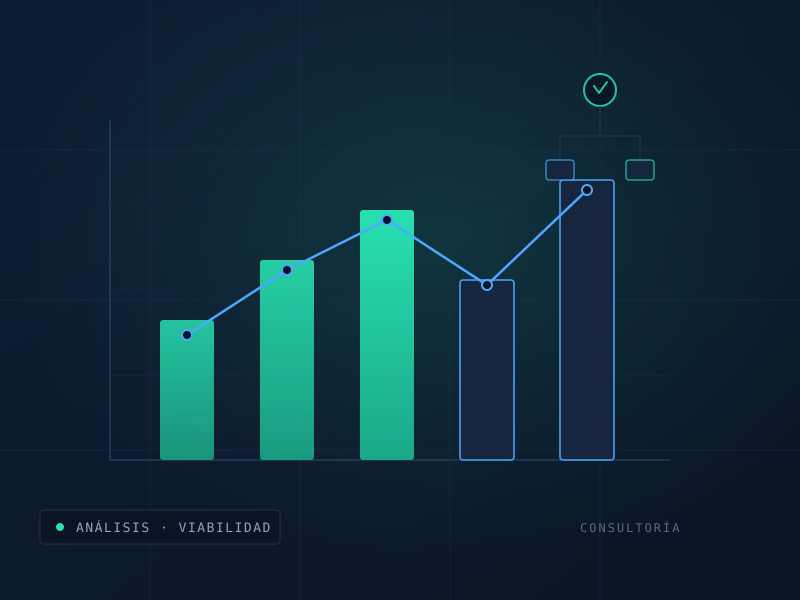

Acompañamos a empresas y gobiernos en la planificación y ejecución de proyectos de inversión con base técnica sólida y tecnologías probadas.

Apoyamos el diseño y la evaluación de proyectos con una visión integral. Antes de comprometer presupuesto, ayudamos a entender la viabilidad técnica, los riesgos y la ruta de ejecución más razonable.
Trabajamos con dependencias de gobierno y empresas que buscan automatización o infraestructura, aportando metodologías prácticas y tecnologías probadas.
El entregable es un caso técnico claro que sirve para sustentar decisiones de inversión ante áreas financieras, comités o instancias de fiscalización.
Entendemos el objetivo, las restricciones y el contexto del proyecto.
Evaluamos alternativas, riesgos y viabilidad con base en datos.
Definimos tecnología, alcance y ruta de ejecución.
Apoyamos la ejecución y el seguimiento del proyecto.
| Alcance | Diagnóstico, evaluación y diseño de proyecto |
| Enfoque | Técnico, de riesgos y de viabilidad |
| Entregables | Informe técnico, análisis de riesgos y ruta de ejecución |
| Sectores | Gobierno, infraestructura, energía e industria |
| Cobertura | Nacional, desde la Ciudad de México |
Antes de comprometer presupuesto, validemos juntos la viabilidad técnica y los riesgos.